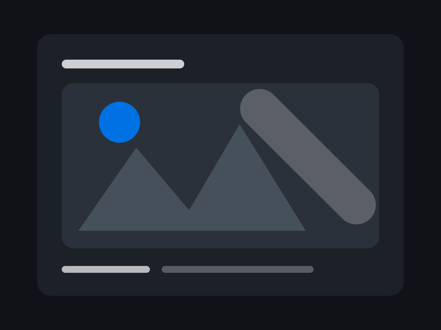

Foto
Stills mit ruhigem Look
Ausgewählte Fotos für Portraits, Markenauftritt und visuelle Serien. Reduziert, hochwertig und nah am Moment.
Foto-Projekte ansehenVideograf & Storyteller
Ich produziere hochwertige Videos mit ruhigem Look, klarer Dramaturgie und einem Gefühl für echte Momente. Von Social Clips bis Imagefilm: präzise geplant, sauber gedreht, stark geschnitten.
Arbeitsproben
Ausgewählte Fotos für Portraits, Markenauftritt und visuelle Serien. Reduziert, hochwertig und nah am Moment.
Foto-Projekte ansehen
Atmosphäre, Bewegung und Highlights in einem schnellen, emotionalen Recap.
Beispiel ansehenKurze Clips für Reels, Kampagnen und Stories mit starkem Einstieg und sauberem Rhythmus.
Beispiel ansehenBest Work
Platzhalter für dein bestes Video. Sobald du mir die Datei gibst, liegt hier dein echtes Hero-Video mit Poster, Controls und sauberem mobilen Layout.
Auswahl
Ein Film, der nicht nur zeigt, was ein Unternehmen macht, sondern warum es relevant ist.
Dynamische Recaps, die Atmosphäre, Menschen und Highlights in wenigen Sekunden spürbar machen.
Vertikale Clips, Reels und kurze Kampagnenformate mit starkem Einstieg und sauberem Rhythmus.
Leistungen
Storyline, Shotlist, Look, Drehplan und eine klare Richtung vor dem ersten Take.
Ruhige Kameraarbeit, sauberes Licht, Ton und ein Blick für natürliche Momente.
Editing, Sounddesign, Farblook und Exportformate für Web, Social und Präsentation.
Über mich
Ich arbeite nah an Menschen und Marken, ohne Bilder zu überladen. Meine Filme sollen hochwertig wirken, aber nicht künstlich. Das Ziel: ein Look, der Vertrauen schafft und hängen bleibt.
Kontakt
Schreib mir kurz, worum es geht, wann gedreht werden soll und wo das Video veröffentlicht wird.